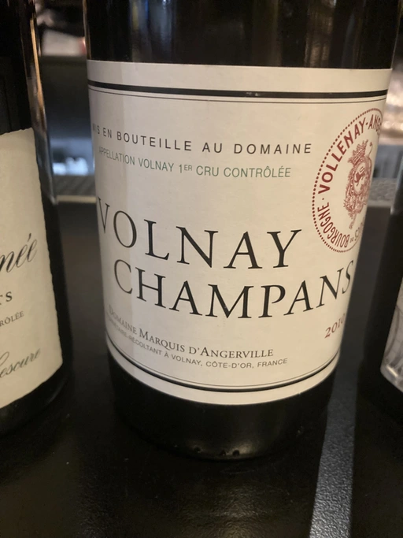

- Type
- Red Still, Dry
- Producer
- Le Domaine Marquis d’Angerville
- Vintage
- 2010
- Location
- France, Volnay AOC
- Grapes
- Pinot Noir
- Alcohol
- 13.5
- Sugar
- NA
- Price
- 5000 UAH
- Cellar
- N/A
Le Domaine Marquis d’Angerville possède 3.98 hectares en appellation Champans, située juste au nord de l’appellation Caillerets. Deux parcelles parallèles constituent notre part de l’appellation (11 hectares au total). Elles s’étendent de haut en bas du climat des Champans et du coteau, profitant ainsi de toutes les caractéristiques de ce remarquable terroir exposé au sud-est, situé au centre des Premiers Crus de Volnay. Le sol est plus pauvre et repose sur un banc calcaire rocheux dans le haut du coteau alors que la pente diminue vers le bas et qu’il devient plus argileux, caillouteux et plus profond.
Historiquement classé Têtes de Cuvée de Volnay, le Champans est l’archétype du grand Volnay 1 er cru : finesse, ampleur et longueur en bouche avec un supplément de générosité et de puissance qui lui est propre. Selon le millésime, il mérite de 5 à 10 années de vieillissement pour se révéler pleinement, mais il est général plus facilement approchable jeune que le Taillepieds ou le Clos des Ducs.
Producer
Domaine with old history dating back to 1507, owning vineyards in Volnay AOC, Meursault AOC and Pommard AOC with focus on Volnay.
Current owner, Guillaume d’Angerville, has a project in Jura - Domaine du Pélican.
Ratings
2021-08-26 - 9.00
Elegant and wonderful bouquet, already showing maturity, but still has energy. Ripe cherry, wild strawberry, red flowers, mushrooms, raw meat. During the evening it opens up a little bit more gaining animal notes. Well balanced, silky with flavours of cherry, wild strawberry and forest floor. Long finish with nice touch of medicinal herbs. Definitely beautiful and sophisticated wine.
Related